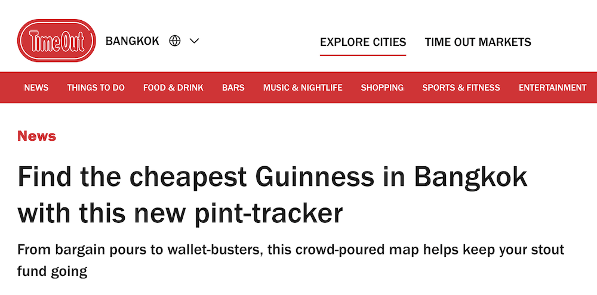

Track Guinness prices across Bangkok and spot the bars serving the best-value pint. For adults of legal drinking age. Enjoy the pint, but mind yourself.
I’m Irish, so I do love a proper pint of Guinness. You know the one with a lovely creamy head served in a clean glass, and a pour that isn’t rushed. In Bangkok and around Thailand, it can be a bit hit and miss. Sometimes you get a great pint at a fair price. Other times… not so much.
After spending more baht than I’d like to admit chasing a decent pint around the land of smiles, I started keeping track of where it’s actually worth ordering. This is a simple attempt to map it all out. No big agenda here, just a guide to help you find a proper Guinness in Thailand without overpaying for it. I’m not here to name and shame, just mapping what I find. Corcaigh abú!

The best happy hour Guinness deals we’ve found in Bangkok so far. We salute you, fine establishments.
Not all pints break the bank. These are the cheapest Guinness pours we’ve found in Bangkok so far.
Not all pints are priced equally. These are the most expensive Guinness pours we’ve found in Bangkok so far.
Bangkok’s full of pubs, but where’s the pint that truly pours like home? Share your go-to spot for the best Guinness in town.
In Bangkok? Allow location access and we’ll point you to the best-value Guinness near you.
Found a better pint, a new price, or something outdated? Let me know and I’ll update it.
Get in touch